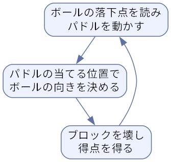

3. 企画
この章では、ゲームのアイデアを企画にまとめ、作る範囲を決めるまでの進め方を扱う。個人開発では企画書を誰かに提出するわけではないが、自分の考えを文章にしておくと、制作中に迷ったときの判断基準になる。
3.1. アイデアを出す
ゲームのアイデアは、次のような出発点から生まれることが多い。
遊び（メカニクス）から考える: 「重力の向きを切り替える」「時間を巻き戻す」など、操作や仕組みの面白さを起点にする。
体験から考える: 「追い詰められる緊張感」「少しずつ街が育つ心地よさ」など、プレイヤーに味わってほしい感情を起点にする。
題材から考える: 料理、天体観測、自分の仕事など、好きなことや詳しいことを起点にする。
制約から考える: 「ボタン 1 つで遊ぶ」「画面は 1 枚だけ」など、あえて制約を設けて発想を広げる。ゲームジャムではお題という形で制約が与えられる。
アイデアの段階では、良し悪しを判断せずに数を出す。その後で、次に説明するコンセプトとコアループの形にまとめられるかどうかで絞り込む。
3.2. コンセプトを一文で表す
コンセプトとは、そのゲームが何であり、何が面白いのかを短く言い表したものである。一文で言えることが望ましい。例えば次のように書く。
ボタン 1 つで重力を反転させながら、トゲだらけの通路を駆け抜けるアクションゲーム。
コンセプトが一文で言えないなら、まだ何が面白いのかが定まっていない可能性が高い。制作中に新しい要素を足したくなったときは、その要素がコンセプトを強めるかどうかで採否を判断する。
3.3. コアループを設計する
コアループとは、プレイヤーがゲーム中に何度も繰り返す行動の流れである。ゲームの面白さは、ほぼこのループの面白さで決まる。ブロック崩しのコアループは次のようになる。

図 3.1 ブロック崩しのコアループ
コアループの外側には、ステージの進行、新しい能力の解放、スコアランキングなど、ループを繰り返す動機を与える仕組みを置く。これをメタループ（またはメタゲーム）と呼ぶことがある。最初の 1 本ではメタループは無くてもよいが、コアループが面白くなければ、メタループをいくら作り込んでも面白くはならない。
3.4. ターゲットと競合を調べる
誰に遊んでほしいのかを決める。「アクションゲームが得意な人」「通勤中に数分だけ遊びたい人」のように、プレイヤー像を具体的にするほど、難易度や 1 回のプレイ時間、操作方法を決めやすくなる。
併せて、似たゲームを探して実際に遊ぶ。配布サイト（公開で紹介する itch.io や Steam など）で関連する単語を検索すれば、すでに多くの作品が見つかるはずである。似たゲームがあること自体は問題ではない。むしろ、そのジャンルを好むプレイヤーがいる証拠である。重要なのは、既存のゲームと何が違うのか、つまり自分のゲームを選んでもらう理由を説明できることである。
3.5. 作る範囲（スコープ）を決める
スコープとは、作ると決めた機能や内容の範囲である。個人開発では、最初に想定したスコープのまま完成することはまず無く、作業量はたいてい見積もりの 2 倍から 3 倍に膨らむ。そこで、作りたい要素を洗い出したうえで、次のように優先度を付けて分類する。
分類 |
意味 |
例 |
|---|---|---|
必須（Must） |
これが無いとゲームとして成り立たない |
パドル、ボール、ブロック、クリア判定、ゲームオーバー |
重要（Should） |
無くても遊べるが、あると大きく良くなる |
スコア、残機、タイトル画面、効果音 |
あれば良い（Could） |
時間が余ったら作る |
破片の演出、複数ステージ、アイテム |
作らない（Won't） |
今回は作らないと明示的に決めたもの |
オンラインランキング、ステージエディター |
このような分類法は、各分類の頭文字を取って MoSCoW 分析と呼ばれる。まず必須の要素だけで遊べる状態を作る。これを MVP（Minimum Viable Product、実用最小限の製品）と呼ぶ。MVP が完成してから重要、あれば良いの順に要素を足していけば、どの時点で作業を打ち切っても「遊べるゲーム」が手元に残る。
「作らない」に分類した要素を書き残しておくことも大切である。制作中に思い付いた新しいアイデアは、いったんこの一覧か「次回作の候補」に入れ、今回のスコープには加えない。
3.6. 企画書と GDD
考えた内容は文書にまとめておく。個人開発なら、次の項目を 1 ページ程度にまとめた企画書で十分である。
項目 |
内容 |
|---|---|
タイトル |
BREAKOUT（仮） |
コンセプト |
パドルの当て方でボールの向きを操り、ブロックをすべて壊すアクションゲーム |
ジャンル |
アクション（ブロック崩し） |
プラットフォーム |
Windows、ブラウザー |
ターゲット |
数分の空き時間に遊びたい人 |
操作 |
左右キーでパドルの移動、スペースキーでボールの発射 |
コアループ |
落下点を読む → 当てる位置で向きを決める → ブロックを壊す |
スコープ |
1 ステージのみ。残機 3。スコア表示あり |
制作期間 |
2 週間（平日夜と週末） |
制作が大きくなると、ルール、操作、画面構成、ステージ、キャラクター、数値の設定などを網羅した GDD（Game Design Document、ゲームデザインドキュメント）を作る。チームで制作する場合は、GDD が全員の共通認識になる。ただし、最初から詳細な GDD を書き上げる必要は無い。遊んで分かったことを反映しながら育てていく文書と考えるのがよい。
3.7. 紙と仮の素材で試す
プログラムを書く前に、紙やカード、サイコロなどを使って遊びを試すことをペーパープロトタイピングと呼ぶ。カードゲームやボードゲーム、ターン制のゲームでは特に有効である。
アクションゲームのように、リアルタイムの操作感が面白さの中心になるゲームは、紙では試しにくい。その場合は、四角形や円などの単純な図形だけを使ったプロトタイプをプログラムで作る。制作実践：ブロック崩しを作るのサンプルコードも、画像ファイルを使わずに図形だけで描いている。見た目に時間をかける前に、面白さを確かめるためである。